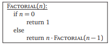

Aquí se encuentran algoritmos que pueden completar una tarea de forma recursiva o iterativa. En ciertas ocasiones una solución es mejor que otra, a veces son iguales. Lo importante es identificar el método que mejor sirve para un problema.
Para los algoritmos que requieren una lista de números pueden copiarse y pegarse listas mas grandes generadas en Algoritmos de ordenacion, solo considere si el algoritmo requiere una lista ordenada o no, pero de preferencia use la lista ordenada.
Recursivo |
Iterativo |
|---|---|
Descripción del algoritmoEste algoritmo encuentra el factorial de un número \( n \) de forma recursiva. Tiene tiempo de ejecución: \( T(n) = \Theta (n) \) PseudocódigoFragmento de (Erickson, 2019), algoritmo similar a visto en clase (Rubio, 2020). Fuente bibliográficaErickson, J. (2019). Algorithms (p.57). http://algorithms.wtf Rubio, Christian. "Metodo maestro y algoritmos recursivos." Analisis de algoritmos, 13 Oct. 2020. Universidad Nacional Autónoma de México. Clase. ImplementaciónRealizada en Javascript. Valores grandes de n pueden causar infinito, pero no se hace lento el proceso. Entrada:El valor \( n \) de la operacion \( n! \) Nota: Los negativos no estan considerados en el algoritmo. n =Salida: Resultado de \( n! \). \( n!=\; \) |
Descripción del algoritmoEste algoritmo encuentra el factorial de un número \( n \) de forma iterativa. Tiene tiempo de ejecución: \( T(n) = \Theta (n) \) Pseudocódigo
% This algorithm is extracted from class
\begin{algorithm}
\caption{Factorial(n)}
\begin{algorithmic}
\STATE $x = 1$
\FOR{$i = 1$ \TO $n$}
\STATE $x = i*x$
\ENDFOR
\RETURN x
\end{algorithmic}
\end{algorithm}
Algoritmo visto en clase (Rubio, 2020), sin referencia exacta. Fuente bibliográficaRubio, Christian. "Continuacion de algoritmos recursivos y bucle invariante." Analisis de algoritmos, 15 Oct. 2020. Universidad Nacional Autónoma de México. Clase. ImplementaciónRealizada en Javascript. Valores grandes de n pueden causar infinito, pero no se hace lento el proceso. Entrada:El valor \( n \) de la operacion \( n! \) Nota: Los negativos no estan considerados en el algoritmo. n =Salida: Resultado de \( n! \). \( n!=\; \) |
Recursivo |
Iterativo |
|---|---|
Descripción del algoritmoEste algoritmo eleva un número \( a \) a la potencia \( n \) deseada de forma recursiva. Tiene tiempo de ejecución: \( T(n) = \Theta (n) \) Pseudocódigo
% This algorithm is extracted from class
\begin{algorithm}
\caption{Power(a,n)}
\begin{algorithmic}
\IF{$n=0$}
\RETURN 1;
\ELSE
\RETURN $a*$\CALL{Power}{$a, n$}
\ENDIF
\end{algorithmic}
\end{algorithm}
Algoritmo visto en clase (Rubio, 2020). Del cual no lo encontré en los libros Cormen ni Erickson, pero el algoritmo es bastante intuitivo. Fuente bibliográficaRubio, Christian. "Metodo maestro y algoritmos recursivos." Analisis de algoritmos, 13 Oct. 2020. Universidad Nacional Autónoma de México. Clase. ImplementaciónRealizada en Javascript. Entrada:Los valores enteros no negativos \( a \) y \(n \) de la operacion \( a^n \) Nota: Valores grandes de \(n \) pueden causar error al alcanzar el maximo permitido de llamadas a funciones. a = n =Salida: Resultado de \( a^n \). \( n!=\; \) |
Descripción del algoritmoEste algoritmo eleva un número \( a \) a la potencia \( n \) deseada de forma iterativa. Tiene tiempo de ejecución: \( T(n) = \Theta (n) \) Pseudocódigo
% This algorithm is created by me
\begin{algorithm}
\caption{Power-I(a,n)}
\begin{algorithmic}
\STATE $x = 1$
\FOR{$i = 1$ \TO $n$}
\STATE $x = a*x$
\ENDFOR
\RETURN x
\end{algorithmic}
\end{algorithm}
Algoritmo creado para satisfacer la comparación. Hay uno similar en (Erickson, 2019) pero no considera el 0. Fuente bibliográficaErickson, J. (2019). Algorithms (p.43). http://algorithms.wtf ImplementaciónRealizada en Javascript. Entrada:Los valores enteros no negativos \( a \) y \(n \) de la operacion \( a^n \) a = n =Salida: Resultado de \( a^n \). \( n!=\; \) |
Recursivo |
Iterativo |
|---|---|
Descripción del algoritmoEste algoritmo busca linealmente un valor en un arreglo de números de forma recursiva. Tiene tiempo de ejecución: \( T(n) = \Theta (n) \) Pseudocódigo
% This algorithm is extracted from class
\begin{algorithm}
\caption{Busqueda-Lineal-R(i,j,x)}
\begin{algorithmic}
\IF{$a_i=x$}
\RETURN $i$;
\ELSEIF{$i=j$}
\RETURN $\varnothing$
\ELSE
\RETURN \CALL{Busqueda-Lineal-R}{$i+1,j,x$}
\ENDIF
\end{algorithmic}
\end{algorithm}
Algoritmo visto en clase (Rubio, 2020). Fuente bibliográficaRubio, Christian. "Metodo maestro y algoritmos recursivos." Analisis de algoritmos, 13 Oct. 2020. Universidad Nacional Autónoma de México. Clase. ImplementaciónRealizada en Javascript. Solo cambie el orden de x al inicio y agregue el paso del arreglo para facilitar la implementacion. Entrada:El valor \( x \) buscado en la lista de números "\( Arr \)" (separados por coma). Nota: El arreglo no necesita estar en orden. Arreglos muy grandes pueden causar error al hacer busquedas muy extensas que superan el limite de hacer recursion. x = Arr=Salida: Primer indice \( i \) (o posicion en el arreglo) donde se encontró el valor buscado, iniciando desde 0, valor nulo significa que no esta el número en el arreglo. \( i=\; \) |
Recursivo |
Iterativo |
|---|---|
Descripción del algoritmoEste algoritmo Pseudocódigo
% This algorithm is extracted from class
\begin{algorithm}
\caption{Power(n)}
\begin{algorithmic}
\IF{$n=0$}
\STATE return 1;
\ELSE \RETURN $a*power(a,n1)$
\ENDIF
\end{algorithmic}
\end{algorithm}
Algoritmo visto en Fuente bibliográficaImplementaciónRealizada en Javascript. Valores grandes Entrada:El valor \( n \) de la operacion \( n! \) Nota: n =Salida: Resultado de \( n! \). \( n!=\; \) |